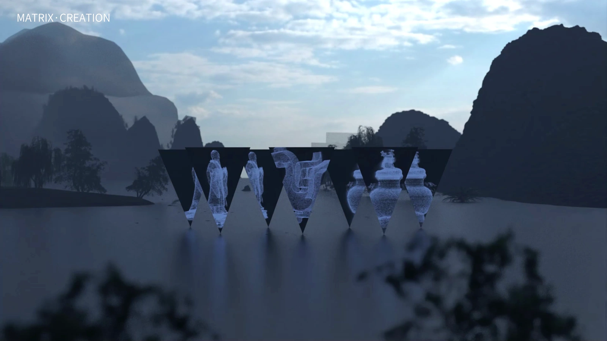
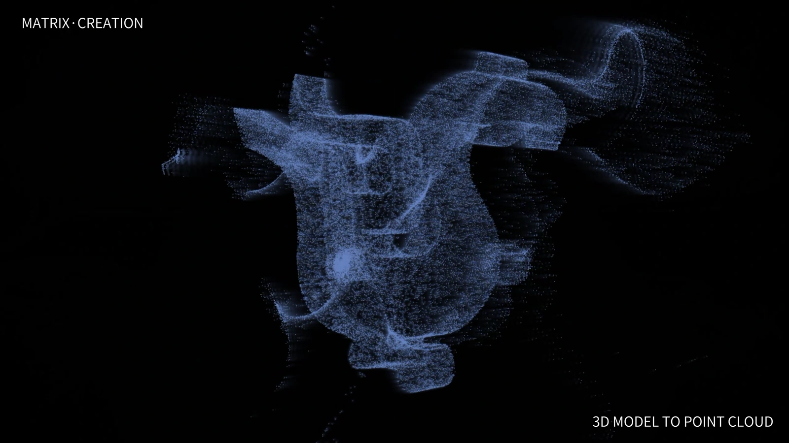
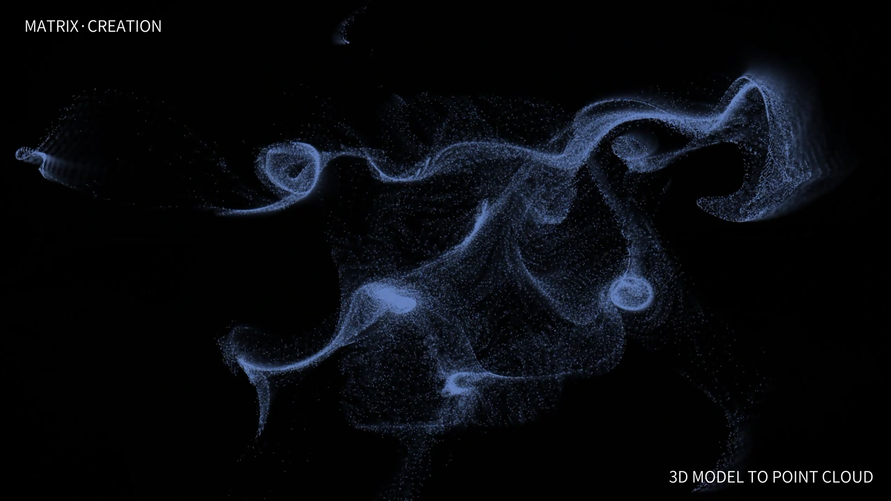
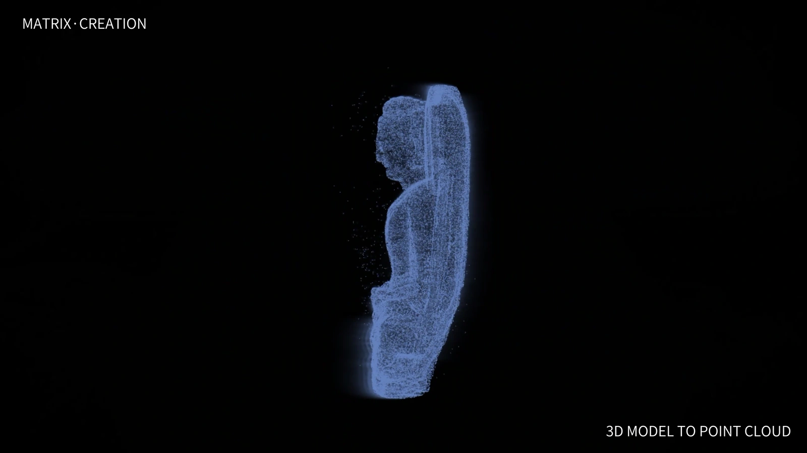
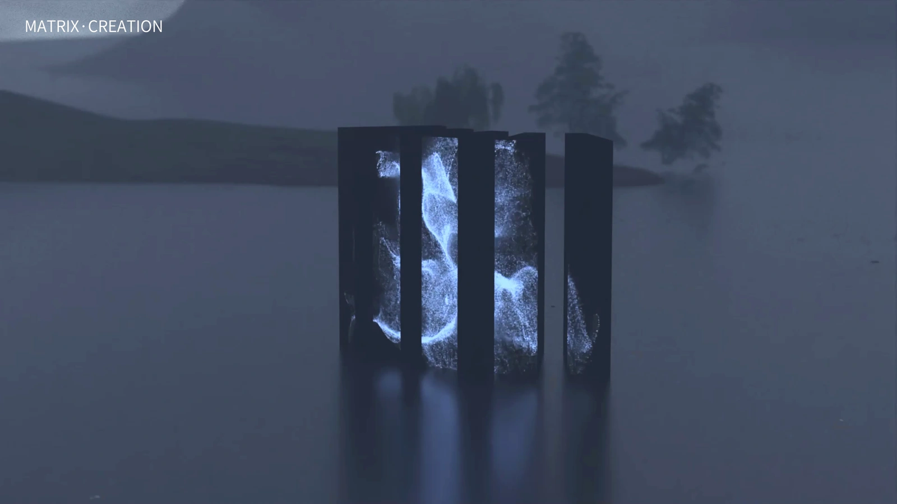
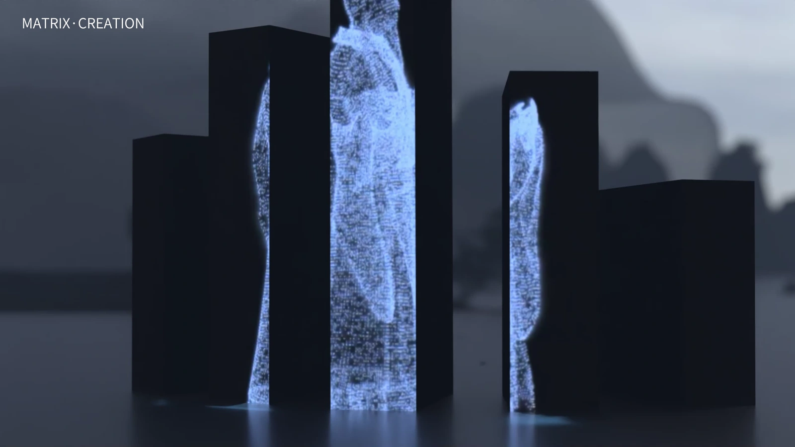

3D motion and virtual display study
Matrix Creation
Particle animations of vessels, figures and ornaments.

A motion study showing how outlines remain recognisable as points move, gather and disperse. The forms appear in a virtual multi-screen landscape.
Watch the particle animation
Motion shifts the density and arrangement of the points. The first part of the film places these animated forms in a display setting; the later sequence isolates them against black for closer inspection.
Three particle forms
A vessel, a bird-like figure and an ornament use the same particle treatment. Their different outlines remain visible as the points move.






Virtual screen arrangements
Upright panels divide the imagery across several screens. Angled screens present separate forms along a path through the landscape.




What to explore next
The next study could compare recognition of the same form at different particle densities, viewing distances and screen arrangements.
3D motion and virtual display study. The rendered film and images use traditional cultural symbols and artefact forms as references. The screen arrangements are visualisations, not built exhibits.